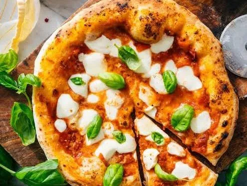

Italian Food and Tradition
Italian cuisine is one of the most loved and influential food cultures in the world.
It is known for its simplicity, fresh ingredients, and deep connection to family
traditions. Recipes are often passed down through generations and vary greatly
depending on the region.
Italian meals are about more than just food — they are about bringing people
together to enjoy good company, conversation, and shared traditions.
Regional Cuisine of Italy
Each region of Italy has its own unique dishes and flavors. Northern Italy is
known for creamy risottos, butter-based sauces, and polenta, while Southern Italy
focuses on tomatoes, olive oil, seafood, and bold flavors.
Coastal regions specialize in fresh seafood, while inland areas feature hearty
meat dishes and handmade pasta. This regional diversity makes Italian cuisine
incredibly rich and varied.
Pizza Margherita
Pizza Margherita originated in Naples and is one of Italy’s most iconic dishes.
It is made with fresh tomatoes, mozzarella cheese, basil, olive oil, and salt.
The red, white, and green colors represent the Italian flag.

Spaghetti alla Carbonara
This classic Roman dish is made with eggs, Pecorino Romano cheese, cured pork,
and black pepper. Authentic carbonara does not use cream; instead, the eggs
create a creamy sauce when mixed with hot pasta.
.webp)
Lasagne al Forno
Lasagne al Forno is a traditional baked pasta dish layered with pasta sheets,
slow-cooked meat sauce, béchamel sauce, and cheese. It is often served during
holidays and family gatherings.
.webp)
Risotto alla Milanese
Originating from Milan, this creamy rice dish is flavored with saffron,
giving it a bright golden color. Risotto requires careful cooking and
constant stirring to achieve its rich texture.
.jpg)
Tiramisu
Tiramisu is one of Italy’s most famous desserts. It is made with layers of
coffee-soaked ladyfingers, mascarpone cheese, cocoa powder, and sugar.
The name "tiramisu" means “pick me up” in Italian.
.webp)
Italian Ingredients
Italian cooking relies on high-quality ingredients such as olive oil, tomatoes,
garlic, basil, cheese, and fresh vegetables. Instead of heavy spices, Italian
dishes focus on natural flavors and freshness.
Cheese plays an important role, with popular varieties including Parmesan,
mozzarella, ricotta, and Pecorino Romano.